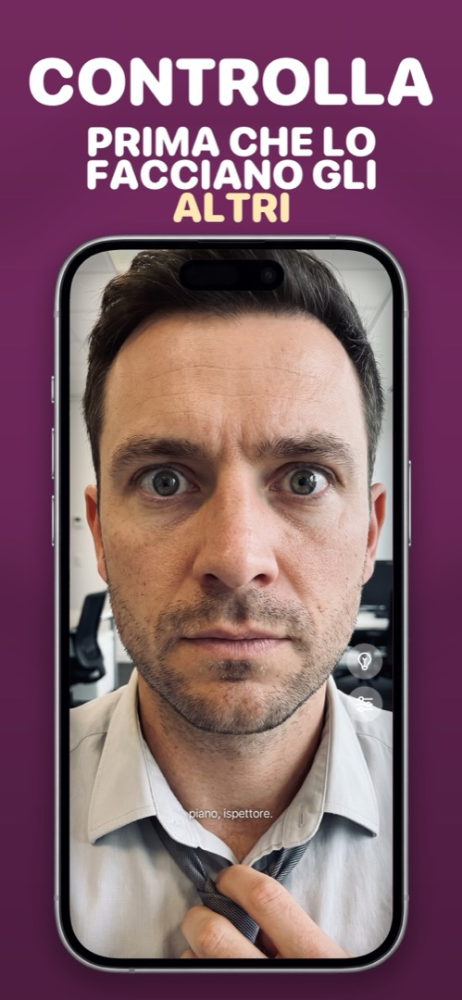

Come controllare il tuo aspetto prima di una riunione (in meno di 10 secondi)
La riunione inizia tra due minuti e l’ultimo specchio che hai incrociato è a casa tua. Questa è la checklist che le persone sempre impeccabili fanno senza pensarci, e come farla sul telefono dalla scrivania, dal parcheggio o dal corridoio.
La checklist da 10 secondi
- Capelli: niente che spunti sulla nuca, sulla riga o davanti.
- Viso: sonno negli occhi, qualcosa sul naso o dentro, un taglietto da rasatura.
- Denti: sorriso largo. È il punto che tutti saltano e che tutti gli altri notano.
- Occhiali: le ditate si vedono sotto le luci dell’ufficio.
- Colletto e cravatta / scollatura: punte del colletto piatte, nodo centrato, nessuna etichetta in vista.
- Spalle: pelucchi, capelli, forfora. Una passata con la mano.
Dall’alto in basso, sempre nello stesso ordine, e ci vogliono davvero meno di dieci secondi.
Prima di una videochiamata, in particolare
La webcam del portatile è un pessimo specchio: bassa risoluzione, angolo sbagliato e, quando finalmente ti vedi, sei già nella stanza con tutti. Fai il controllo sul telefono prima di premere Partecipa. Due punti in più per le chiamate: la luce dev’essere davanti a te e non dietro (una finestra alle spalle ti trasforma in una sagoma), e alza il portatile in modo che la fotocamera sia all’altezza degli occhi.
Perché il telefono batte la caccia allo specchio
Ce l’hai già in mano, funziona in un corridoio buio o in auto, e con lo zoom noterai cose che uno specchio a parete a due metri non mostrerebbe mai. L’unica cosa da evitare è farlo nell’app Fotocamera e fotografarti per sbaglio a metà smorfia.
Come farlo in Mirrorly
Con Mirrorly la checklist è aprire un’app e chiuderla:
- Apri Mirrorly. Specchio a schermo intero, luminosità al massimo, nessun pulsante di scatto da toccare.
- Fai la lista dall’alto in basso: capelli, viso, denti, occhiali, colletto, spalle.
- Scorri per lo zoom sui denti; tocca la lampadina se sei in un corridoio buio o in auto.
- Chiudi ed entra. Niente è stato salvato.

Mirrorly è gratis da provare sull’App Store. Uno specchio a schermo intero per iPhone con luce ad anello, zoom e luminosità al massimo. Tre controlli gratuiti, poi un acquisto una tantum: niente abbonamento, niente foto salvate, niente account, niente pubblicità.